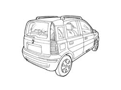
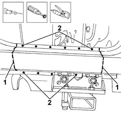
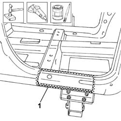
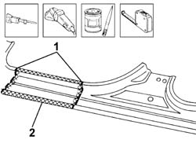
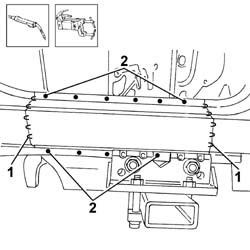

7210E45 partial door sill rail outer trim
- Path
- Procedures > 72 PANELS AND FRAME > 7210 REMOVING REFITTING > 7210E EXTERNAL PARTS > 7210E45 partial door sill rail outer trim
- Kind
- repair procedure (removal / refitting; the operation number is the code)
- Applies to
- all engines; all production periods
- Interactive page
- https://sloeber94.github.io/elrnDB-fPnd/en/#/2753361
Applies to: all engines; all production periods
 Removing
Removing
 Refitting
RefittingCheck if any of the connected parts are deformed by checking body alignment dimensions. Use appropriate measurement tools (reference rigs, templates or gauges).
Straighten the body if necessary.

Applies to: all engines; all production periods
1. Use a hacksawing machine to cut along the cutting lines illustrated on the underdoor sidemember cover.
Use a rotary brush to remove paint to gain access to the weld spots.
2. Use a chamfering machine to remove the weld spots shown in the figure.
Remove the cut parts.
Trim the cut edges from the car.

Applies to: all engines; all production periods
Straighten the car edges using a mallet and profiled stake.
1. Use a grinding wheel to remove the spot weld residues.
Use a rotary brush to clean treated areas.
Apply the electroweldable paint finish.

Applies to: all engines; all production periods
Refitting
Removing1. Cut the underdoor side member outer cover, taking care to leave a sufficiently wide section of panel to attach the new part to.
2. Use a grinding wheel to remove the corrosion-proofing from around the inner and outer edge of the parts.
Apply electric weld paint finish to the edges to be welded.

Applies to: all engines; all production periods
Fit the part correctly on the car using self-locking grippers.
Check the alignment and ensure the surrounding gaps are even.
Using a circular saw, cut the two overlapping parts on the underdoor side member cover.
1. Using the MIG welder, seam weld the areas illustrated in the diagram previously involved in the cutting.
2. Use a spot welder to weld the areas shown in the figure.

Applies to: all engines; all production periods
Correct any deformations in the panel using a profiled stake and mallet.
Use a grinding wheel to level the welds
Use a rotary brush to clean the newly-welded areas.
Apply rust-proofing to newly-welded areas.
Seal the joint lines between the part and the car.